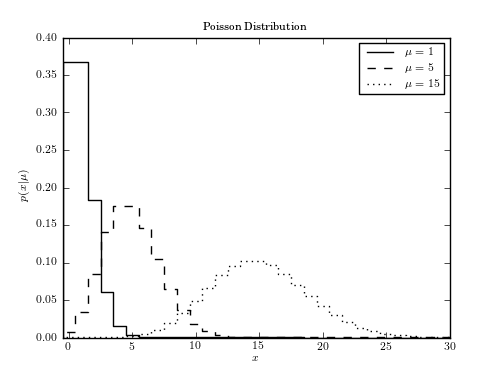

Example of a Poisson distribution¶
Figure 3.10.
This shows an example of a Poisson distribution with various parameters. We’ll generate the distribution using:
dist = scipy.stats.poisson(...)
Where ... should be filled in with the desired distribution parameters Once we have defined the distribution parameters in this way, these distribution objects have many useful methods; for example:
- dist.pmf(x) computes the Probability Mass Function at values x in the case of discrete distributions
- dist.pdf(x) computes the Probability Density Function at values x in the case of continuous distributions
- dist.rvs(N) computes N random variables distributed according to the given distribution
Many further options exist; refer to the documentation of scipy.stats for more details.
{kind=link}
# Author: Jake VanderPlas
# License: BSD
# The figure produced by this code is published in the textbook
# "Statistics, Data Mining, and Machine Learning in Astronomy" (2013)
# For more information, see http://astroML.github.com
# To report a bug or issue, use the following forum:
# https://groups.google.com/forum/#!forum/astroml-general
import numpy as np
from scipy.stats import poisson
from matplotlib import pyplot as plt
#----------------------------------------------------------------------
# This function adjusts matplotlib settings for a uniform feel in the textbook.
# Note that with usetex=True, fonts are rendered with LaTeX. This may
# result in an error if LaTeX is not installed on your system. In that case,
# you can set usetex to False.
from astroML.plotting import setup_text_plots
setup_text_plots(fontsize=8, usetex=True)
#------------------------------------------------------------
# Define the distribution parameters to be plotted
mu_values = [1, 5, 15]
linestyles = ['-', '--', ':']
#------------------------------------------------------------
# plot the distributions
# we generate it using scipy.stats.poisson(). Once the distribution
# object is created, we have many options: for example
# - dist.pmf(x) evaluates the probability mass function in the case of
# discrete distributions.
# - dist.pdf(x) evaluates the probability density function for
# evaluates
fig, ax = plt.subplots(figsize=(5, 3.75))
for mu, ls in zip(mu_values, linestyles):
# create a poisson distribution
# we could generate a random sample from this distribution using, e.g.
# rand = dist.rvs(1000)
dist = poisson(mu)
x = np.arange(-1, 200)
plt.plot(x, dist.pmf(x), ls=ls, color='black',
label=r'$\mu=%i$' % mu, linestyle='steps-mid')
plt.xlim(-0.5, 30)
plt.ylim(0, 0.4)
plt.xlabel('$x$')
plt.ylabel(r'$p(x|\mu)$')
plt.title('Poisson Distribution')
plt.legend()
plt.show()